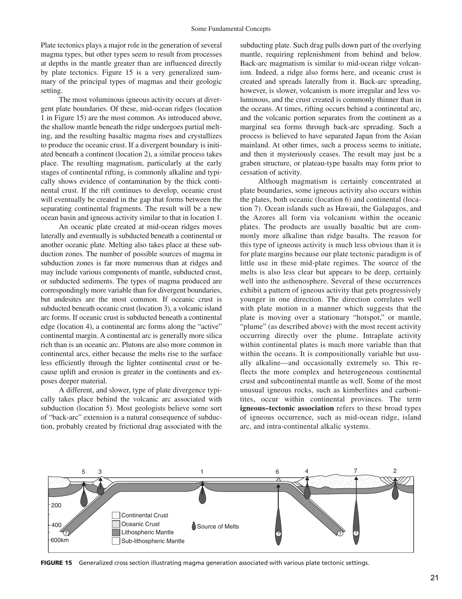

<!DOCTYPE html>
<html lang="en">
<head>
<meta charset="UTF-8">
<meta name="viewport" content="width=device-width, initial-scale=1.0">
<title>Q78: Ultra-Alkalic Plutonic Rocks - Mineralogy and Petrology of Ijolite | OPSC Geology 2021 Masterclass</title>
<link rel="preconnect" href="https://fonts.googleapis.com">
<link rel="preconnect" href="https://fonts.gstatic.com" crossorigin>
<link href="https://fonts.googleapis.com/css2?family=Inter:wght@400;500;600;700;800&family=Fira+Code:wght@400;500&display=swap" rel="stylesheet">
<script>
  window.MathJax = {
    tex: { inlineMath: [['$', '$'], ['\\(', '\\)']] }
  };
</script>
<script id="MathJax-script" async src="https://cdn.jsdelivr.net/npm/mathjax@3/es5/tex-mml-chtml.js"></script>
<style>
  *, *::before, *::after { box-sizing: border-box; margin: 0; padding: 0; }
  body {
    font-family: 'Inter', -apple-system, BlinkMacSystemFont, Roboto, sans-serif;
    background: #f1f5f9;
    color: #0f172a;
    line-height: 1.65;
    padding: 24px 16px;
  }
  .page { max-width: 960px; margin: 0 auto; }
  
  @page { size: A4; margin: 14mm; }
  @media print {
    body { background: #fff; padding: 0; }
    .no-print { display: none !important; }
    .part-banner { break-before: page; }
    .first-part { break-before: avoid !important; }
  }
  
  .header {
    background: linear-gradient(135deg, #0f172a 0%, #1e293b 50%, #334155 100%);
    color: #fff;
    border-radius: 12px;
    padding: 28px 32px;
    margin-bottom: 24px;
    box-shadow: 0 4px 14px rgba(0,0,0,0.12);
  }
  .badge {
    display: inline-block;
    background: #0284c7;
    color: #fff;
    font-size: 11px;
    font-weight: 700;
    letter-spacing: 1px;
    text-transform: uppercase;
    border-radius: 4px;
    padding: 4px 10px;
    margin-bottom: 12px;
  }
  .header h1 { font-size: 23px; font-weight: 800; line-height: 1.35; }
  .header .meta { font-size: 13.5px; color: #94a3b8; margin-top: 10px; }
  
  .back-nav {
    margin-bottom: 16px;
  }
  .back-link {
    display: inline-flex;
    align-items: center;
    gap: 6px;
    color: #0284c7;
    text-decoration: none;
    font-size: 13.5px;
    font-weight: 600;
  }
  .back-link:hover { text-decoration: underline; }

  .part-banner {
    background: linear-gradient(135deg, #1e3a8a 0%, #2563eb 100%);
    color: #fff;
    border-radius: 10px;
    padding: 16px 24px;
    margin: 28px 0 20px 0;
    box-shadow: 0 3px 10px rgba(37, 99, 235, 0.2);
  }
  .part-banner.green {
    background: linear-gradient(135deg, #065f46 0%, #059669 100%);
    box-shadow: 0 3px 10px rgba(5, 150, 105, 0.2);
  }
  .part-banner.purple {
    background: linear-gradient(135deg, #581c87 0%, #7c3aed 100%);
    box-shadow: 0 3px 10px rgba(124, 58, 237, 0.2);
  }
  .part-banner h2 { font-size: 18px; font-weight: 700; }
  
  .content-card {
    background: #fff;
    border-radius: 10px;
    border: 1px solid #e2e8f0;
    padding: 24px 28px;
    box-shadow: 0 1px 3px rgba(0,0,0,0.05);
    margin-bottom: 20px;
  }
  .content-card h3 { font-size: 17px; font-weight: 700; color: #1e293b; margin: 18px 0 10px 0; }
  .content-card p { margin-bottom: 12px; font-size: 14.5px; color: #334155; }
  .content-card ul { margin: 10px 0 16px 24px; font-size: 14.5px; color: #334155; }
  .content-card li { margin-bottom: 8px; }

  .q-box {
    background: #f8fafc;
    border-left: 4px solid #0284c7;
    border-radius: 0 8px 8px 0;
    padding: 18px 22px;
    margin-bottom: 20px;
  }
  .q-stmt { font-size: 16px; font-weight: 700; color: #0f172a; margin-bottom: 14px; line-height: 1.5; }
  .options-grid {
    display: grid;
    grid-template-columns: 1fr 1fr;
    gap: 10px;
  }
  .opt-item {
    background: #fff;
    border: 1px solid #cbd5e1;
    border-radius: 6px;
    padding: 10px 14px;
    font-size: 14px;
    font-weight: 500;
  }
  .opt-item.correct {
    background: #f0fdf4;
    border-color: #16a34a;
    color: #15803d;
    font-weight: 700;
  }
  
  .verified-box {
    background: #ecfdf5;
    border: 1px solid #a7f3d0;
    border-left: 5px solid #10b981;
    border-radius: 8px;
    padding: 16px 20px;
    margin: 18px 0;
  }
  .v-badge {
    display: inline-block;
    background: #10b981;
    color: #fff;
    font-size: 11.5px;
    font-weight: 800;
    padding: 2px 8px;
    border-radius: 4px;
    margin-bottom: 8px;
  }
  
  .table-wrap { overflow-x: auto; margin: 16px 0; }
  .spec-table {
    width: 100%;
    border-collapse: collapse;
    font-size: 13.5px;
    text-align: left;
  }
  .spec-table th {
    background: #0f172a;
    color: #fff;
    padding: 10px 14px;
    font-weight: 600;
  }
  .spec-table td {
    padding: 10px 14px;
    border-bottom: 1px solid #e2e8f0;
    vertical-align: top;
  }
  .spec-table tr:nth-child(even) td { background: #f8fafc; }

  .qa-card {
    background: #faf5ff;
    border: 1px solid #e9d5ff;
    border-radius: 8px;
    padding: 18px 22px;
    margin-bottom: 16px;
  }
  .q-title { font-size: 15px; font-weight: 700; color: #6b21a8; margin-bottom: 8px; }
  .a-box {
    background: #fff;
    border-left: 3px solid #7c3aed;
    padding: 12px 16px;
    border-radius: 0 6px 6px 0;
    margin-top: 10px;
    font-size: 14px;
  }

  /* ── Figure Styles ── */
  .tb-figure {
    background: #ffffff;
    border: 1px solid #cbd5e1;
    border-radius: 8px;
    padding: 14px;
    margin: 20px 0;
    text-align: center;
    box-shadow: 0 2px 8px rgba(0,0,0,0.06);
    page-break-inside: avoid;
    break-inside: avoid;
  }
  .tb-figure img {
    max-width: 100%;
    height: auto;
    border-radius: 6px;
    display: block;
    margin: 0 auto 12px auto;
  }
  .tb-figure figcaption {
    font-size: 13px;
    color: #475569;
    line-height: 1.5;
    text-align: justify;
    padding: 8px 12px;
    background: #f8fafc;
    border-radius: 6px;
    border-top: 1px solid #e2e8f0;
  }
  .tb-figure figcaption strong { color: #0f172a; font-weight: 700; }
</style>
</head>
<body>
<div class="page">
  <div class="back-nav no-print">
    <a href="../../index.html" class="back-link">← Back to Odisha Master Portal</a>
  </div>
  
  <div class="header">
    <div class="badge">GEO - 2/21 • Igneous Petrology</div>
    <h1>Q78: Ultra-Alkalic Plutonic Rocks - Mineralogy and Petrology of Ijolite</h1>
    <div class="meta">
      <strong>Exam:</strong> Geology Paper-II (2021) &nbsp;|&nbsp; 
      <strong>Authoritative Reference:</strong> J.D. Winter (Principles of Igneous and Metamorphic Petrology, Ch. 2, p. 28)
    </div>
  </div>

  <!-- PART I -->
  <div class="part-banner first-part">
    <h2>Part I: Theoretical Foundation & Concept Masterclass</h2>
  </div>
  <div class="content-card">
    
<h3>1. Core Question Analysis & Verbatim Textbook Grounding</h3>
<p>The question tests knowledge of extreme silica-undersaturated, <strong>ultra-alkalic</strong> igneous plutonic rocks.</p>

<blockquote>
  <strong>Textbook Citation (John D. Winter, <em>Principles of Igneous and Metamorphic Petrology</em>, 2nd Ed., Chapter 20, Section 20.3, p. 419):</strong><br>
  <em>"<strong>Ijolite</strong> is a melanocratic to mesocratic, silica-undersaturated, ultra-alkaline plutonic rock composed essentially of <strong>nepheline</strong> (typically 30–70%) and <strong>alkali pyroxene</strong> (aegirine-augite to aegirine), lacking both plagioclase and alkali feldspar. Together with urtite (nepheline &gt; 70%) and jacupirangite (pyroxene + magnetite &gt; 70%), ijolite forms the classic foidolite series associated with alkaline carbonatite complexes (e.g., Fen, Alnö, Amba Dongar)."</em>
</blockquote>

    <div class="tb-figure">
      
      <figcaption>
        <strong>Figure 78.1: IUGS Classification of Ultra-Alkalic Plutonites.</strong> Authentic diagram from J.D. Winter (<em>Principles of Igneous and Metamorphic Petrology</em>, Ch. 2, p. 28). Ijolite is an ultra-alkalic, feldspar-free plutonic rock composed essentially of nepheline ($>50\%$) and aegirine-augite pyroxene.
      </figcaption>
    </div>

  </div>

  <!-- PART II -->
  <div class="part-banner green">
    <h2>Part II: Official Question & Critical Option Dissection</h2>
  </div>
  <div class="content-card">
    <div class="q-box">
      <div class="q-stmt">Q78. Which of the following is an ultra-alkalic rock ?</div>
      <div class="options-grid">
        <div class="opt-item "><strong>(A)</strong> Adamellite</div>
        <div class="opt-item "><strong>(B)</strong> Rhyodacite</div>
        <div class="opt-item "><strong>(C)</strong> Trondhjemite</div>
        <div class="opt-item correct"><strong>(D)</strong> Ijolite</div>
      </div>
    </div>
    
<h3>2. Petrochemical Classification Matrix</h3>
<table class="tb-table">
  <thead>
    <tr>
      <th>Rock Name</th>
      <th>Essential Mineralogy</th>
      <th>Silica Saturation</th>
      <th>Alkalinity & Magma Series</th>
    </tr>
  </thead>
  <tbody>
    <tr>
      <td><strong>Ijolite</strong></td>
      <td>Nepheline + Aegirine-Augite (No feldspar!)</td>
      <td><strong>Strongly Silica-Undersaturated</strong> ($foid$-bearing, $Ne$-normative)</td>
      <td><strong>Ultra-Alkaline</strong> ($(\mathrm{Na_2O+K_2O})/\mathrm{Al_2O_3} \ge 1$, peralkaline)</td>
    </tr>
    <tr>
      <td><strong>Adamellite</strong></td>
      <td>Plagioclase $pprox$ K-feldspar + Quartz (10–35%)</td>
      <td>Silica-Oversaturated (Quartz-normative)</td>
      <td>Sub-alkaline (Calc-alkaline granite series)</td>
    </tr>
    <tr>
      <td><strong>Rhyodacite</strong></td>
      <td>Plagioclase + Sanidine + Quartz phenocrysts in felsic glass</td>
      <td>Silica-Oversaturated ($SiO_2 &gt; 68\%$)</td>
      <td>Sub-alkaline volcanic</td>
    </tr>
    <tr>
      <td><strong>Trondhjemite</strong></td>
      <td>Oligoclase/Andesine + Quartz + minor Biotite (TTG suite)</td>
      <td>Silica-Oversaturated ($SiO_2 &gt; 70\%$)</td>
      <td>Sub-alkaline, strongly sodic ($K_2O/Na_2O &lt; 0.5$)</td>
    </tr>
  </tbody>
</table>

  </div>

  <!-- PART III -->
  <div class="part-banner purple">
    <h2>Part III: Synthesis Reference Tables & High-Yield Practice</h2>
  </div>
  <div class="content-card">
    
<h3>3. Critical Option Elimination & Exam Traps</h3>
<ul>
  <li><strong>Option A (Adamellite):</strong> Monzogranite; contains 20–60% quartz, hence strongly silica-oversaturated and sub-alkaline.</li>
  <li><strong>Option B (Rhyodacite):</strong> Felsic extrusive volcanic equivalent of granodiorite; high silica, not alkalic.</li>
  <li><strong>Option C (Trondhjemite):</strong> Leucocratic tonalite rich in sodic plagioclase; archetype of Archaean continental crust (TTG suites), not alkaline.</li>
  <li><strong>Option D (Ijolite) is correct:</strong> Lacks feldspar entirely and is composed of nepheline + pyroxene, placing it firmly in the ultra-alkalic foidolite group.</li>
</ul>

  </div>
</div>
</body>
</html>
